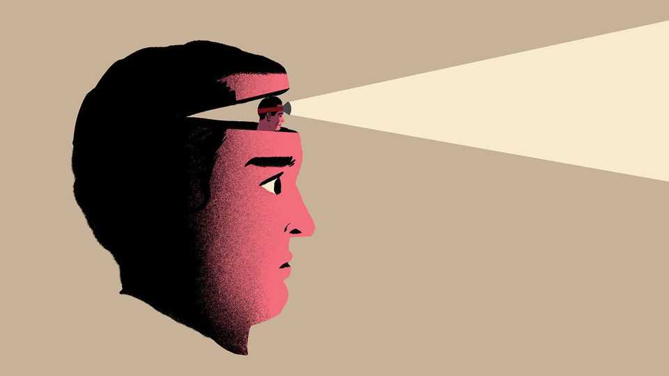

The quality you should most wish for your children
The benefits of having an internal locus of control

Aug 27th 2026
If you could bestow any quality on your children, which one would you pick? Great intelligence? Empathy for humanity? Much greater respect for their parents? The ability to pass a fridge without opening it?
Deborah Cobb-Clark, an economist at the University of Sydney, has a different answer: an internal locus of control. The concept of a locus of control was developed in the 1960s by a psychologist with the tremendous name of Julian Rotter. It is closely linked to the idea of agency. People with an internal locus of control believe that they are able to shape the world around them; those with an external locus of control tend to think that luck, destiny or other people determine their fate.
It turns out that being an internal is pretty useful. It motivates effort: one study by Ms Cobb-Clark and her co-authors looked at a cohort of newly unemployed people in Germany, and found that people with a more external locus of control searched less intensively for work than internals. Why spend time hunting for jobs, after all, if outcomes are disconnected from actions? Externals also had lower reservation wages, the minimum pay they were prepared to accept for a job.
An internal locus is linked to self-control: another paper concluded that households with a greater sense of agency save more of their wealth. It helps turn intention into action, too, seeming to prompt people with entrepreneurial aspirations to actually take the leap and become a founder.
Being an internal also seems to help your descendants. A paper by Warn Lekfuangfu of Universidad Carlos III de Madrid and her co-authors found that, other things being equal, the locus of control of expectant mothers is correlated with the effort they put into active parenting. Internals are more likely to think that time spent developing the skills of their sprogs will pay off. Externals are more likely to think: “Little Rodney is just a helpless plaything of the gods.”
The locus of control exists on a spectrum. Ms Cobb-Clark worries most about the small minority of people who never really develop a sense of their own agency at all. But many more routinely underestimate their power to exert control over their circumstances.
In her pointedly titled book, “You Can Just Do Things”, Cate Hall cites research by Francis Flynn and Vanessa Lake, then of Columbia University, showing that people misjudge how likely others are to respond to requests for help. In a series of experiments, the researchers asked participants how many strangers they would have to approach to complete a range of tasks, from filling out questionnaires to borrowing a mobile phone to make a call. The actual numbers were much lower than the estimates, not because people are unbelievably nice, but because it is awkward to reject a direct request for help.
In another experiment, Steven Levitt of the University of Chicago got people who were dithering over a big decision to toss a virtual coin to help them make their choice. A toss in favour of change made it much more likely that someone would go ahead and break with the status quo. Those who did reported being much happier than those who did not. That suggests many people who would benefit from change lack the sense of agency to seize control of their own destiny without a nudge.
If an external locus of control is holding back individuals, it could be hindering organisations, too. A new paper, co-written by Feng Xu of the Harbin Institute of Technology, looks at adoption of artificial intelligence by manufacturing firms in Shenzhen. The researchers find that internals, who are more likely to see AI as a skill to master, are happier to share knowledge about their experiences of it. Externals, who are more likely to see the technology as a threat to their job security, are more prone to hiding information.
What should managers do about this? They could test for locus of control in hiring processes: Andrej Karpathy, a quotable AI researcher, has said that as a trait, agency is both more powerful and scarcer than intelligence. Compensation and promotion systems should reward achievement as a matter of course, but that link can be made more explicit. Cultural norms can also be set to prompt people towards taking action. “Ask forgiveness, not permission” is a mantra that can have some pretty ugly consequences if you have lots of high-agency people and no guardrails. But the idea behind it is sound. ■
Step inside the world of work with our Bartleby newsletter. Each week our white-collar oracle muses on the agonies of office life.